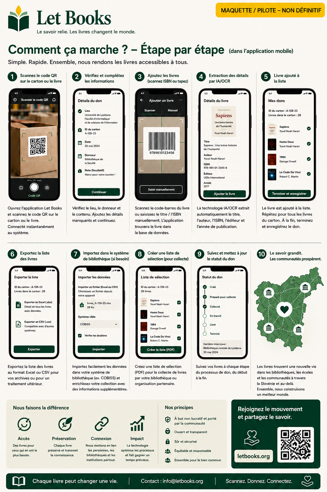

Les textes et flux de cette page décrivent la direction du projet, et non une implémentation de production finalisée.
Guide pour les particuliers
Cataloguez votre première boîte sans transformer cela en grand projet.
Cette page s'adresse aux donateurs privés, familles, bénévoles et petites organisations qui veulent préserver des livres importants et ensuite les proposer et les retrouver plus facilement.

Quand ce guide vous concerne
- Vous avez des livres chez vous, en réserve ou au bureau.
- Vous voulez savoir ce qu'il y a dans chaque boîte avant de proposer quoi que ce soit.
- Vous avez besoin d'un flux mobile avec moins de saisie.
- Plus tard, vous pourrez peut-être donner à une ou plusieurs bibliothèques.
À quoi ressemble la réussite
- Vous scannez une boîte et voyez son contenu.
- Vous ajoutez un nouveau livre en quelques secondes.
- Vous exportez une liste propre pour la revue.
- Vous retrouvez les exemplaires demandés au moment du retrait.
Flux de travail rapide
Le premier passage doit être suffisamment rapide pour de vraies étagères et de vraies boîtes.
Scannez les boîtes QR
Ouvrez le bon contexte de lieu avant la saisie.
Photographiez la couverture
La couverture reste le principal repère visuel pour parcourir.
Scannez ou saisissez l'ISBN
S'il est visible, utilisez-le. Sinon, enregistrez puis enrichissez plus tard.
Enregistrez et continuez
La saisie rapide ne doit pas exiger une bibliographie complète avant le livre suivant.
Exportez pour la revue
Préparez un lot pour la bibliothèque ou le partenaire.
Créez la liste de retrait
Les livres demandés sont regroupés par pièce, étagère et boîte.
Ce qu'il est le plus important d'enregistrer
Titre, auteur, année lorsqu'elle est visible, état de l'exemplaire et emplacement exact. Ce sont les données qui rendent le don praticable ensuite.
L'IA comme assistante, pas comme autorité
Si l'OCR ou les suggestions de métadonnées sont activés plus tard, considérez-les comme des suggestions qui exigent une vérification humaine.
Exemple : Une famille hérite de la bibliothèque technique d'un professeur, étiquette les boîtes, photographie les couvertures, exporte un lot pour revue puis retrouve plus tard exactement les exemplaires demandés par la bibliothèque.